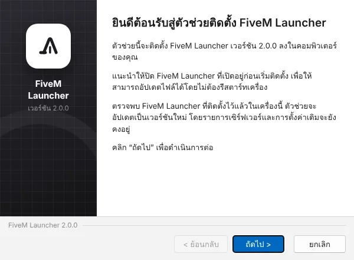

ฟรี · Windows 10 / 11
เข้าเซิร์ฟ FiveM ในคลิกเดียว
เก็บเซิร์ฟที่ชอบไว้ที่เดียว ดูจำนวนคนออนไลน์และปิงแบบเรียลไทม์ ล้างแคชแก้เกมเด้งได้ในตัว — โปรแกรมเล็ก เบา ไม่กินเครื่อง
ดาวน์โหลดฟรีสำหรับ Windows

เก็บเซิร์ฟที่ชอบไว้ที่เดียว ดูจำนวนคนออนไลน์และปิงแบบเรียลไทม์ ล้างแคชแก้เกมเด้งได้ในตัว — โปรแกรมเล็ก เบา ไม่กินเครื่อง
ดาวน์โหลดฟรีสำหรับ Windows

ทุกอย่างที่ต้องใช้ก่อนเข้าเกม รวมไว้ในหน้าเดียว
เปิด FiveM และเชื่อมต่อเซิร์ฟให้อัตโนมัติ ไม่ต้องพิมพ์ connect ใน F8
รู้ทันทีว่าเซิร์ฟไหนเปิด คนเยอะแค่ไหน เต็มหรือยัง อัปเดตให้เองทุก 15 วินาที
พิมพ์ชื่อแล้วเจอเลย มีรายชื่อเซิร์ฟไทยเรียงตามคนเล่น หรือเพิ่มเองด้วยโดเมน IP หรือลิงก์ cfx.re/join
แก้อาการเกมเด้ง โหลดค้าง หรือพื้นที่เต็ม บอกขนาดก่อนลบทุกครั้ง
ตอนเล่นเกมโปรแกรมจะผ่อนแรงเอง ย่อหน้าต่างแล้วหยุดทำงานเบื้องหลังทั้งหมด
ขาว-เทามินิมอล หรือซากุระสีชมพู เลือกภาษาไทยหรืออังกฤษได้ อัปเดตเวอร์ชันใหม่ให้อัตโนมัติ
ใช้เวลาไม่ถึงนาที
กดปุ่มดาวน์โหลดด้านบน จะได้ไฟล์ FiveM-Launcher-Setup.exe
ดับเบิลคลิกไฟล์ แล้วกด “ถัดไป” ตามขั้นตอนจนติดตั้งเสร็จ
กด “เพิ่มเซิร์ฟเวอร์” ใส่ที่อยู่เซิร์ฟ กด “ตรวจสอบ” แล้วบันทึก
โปรแกรมติดตั้งในโฟลเดอร์ของผู้ใช้ ไม่ต้องใช้สิทธิ์ Admin และไม่แตะไฟล์ระบบ สิ่งที่ทำมีแค่อ่านสถานะเซิร์ฟที่คุณเพิ่มไว้ เปิด FiveM และลบโฟลเดอร์แคชของ FiveM เมื่อคุณสั่งเท่านั้น ข้อมูลเซิร์ฟเก็บอยู่ในเครื่องคุณ ไม่ส่งไปที่ไหน และโค้ดทั้งหมดเปิดให้ดูได้บน GitHub
Windows 10 หรือ 11 (64-bit) และต้องติดตั้ง FiveM ไว้แล้ว โปรแกรมใช้ Microsoft Edge WebView2 ซึ่งมีมากับ Windows 11 และ Windows 10 ที่อัปเดตแล้ว ถ้าเครื่องไหนไม่มี ตัวติดตั้งจะพาไปดาวน์โหลดให้
เช็กว่าติดตั้ง FiveM แล้วและเปิดเองได้ปกติ ถ้า Windows ถามว่าจะเปิดลิงก์ด้วยโปรแกรมไหน ให้เลือก FiveM ถ้ายังไม่ได้ ลองไปที่ ตั้งค่า → ตำแหน่ง FiveM แล้วเลือกไฟล์ FiveM.exe เอง
ไม่หาย จะลบเฉพาะไฟล์ชั่วคราวที่ FiveM โหลดจากเซิร์ฟ (crashes, cache, server-cache) ไม่กระทบตัวเกม การตั้งค่า หรือบัญชี ครั้งต่อไปที่เข้าเซิร์ฟจะโหลดนานขึ้นนิดหน่อย
ไปที่ การตั้งค่า (Settings) → แอป (Apps) → ค้นหา FiveM Launcher → ถอนการติดตั้ง (Uninstall)